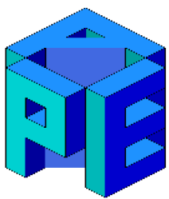
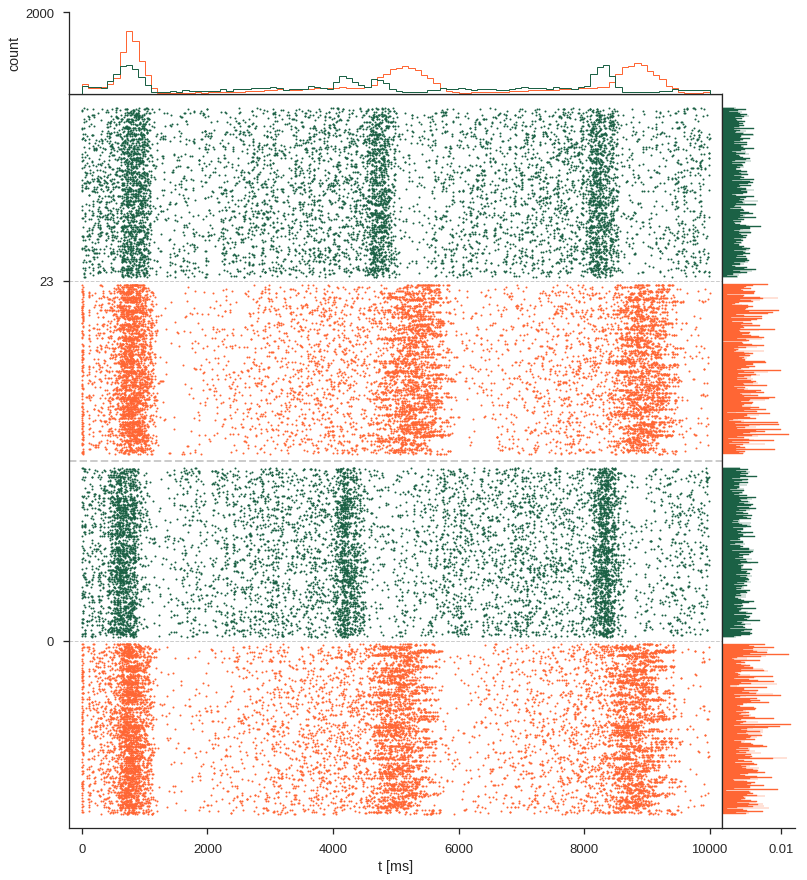
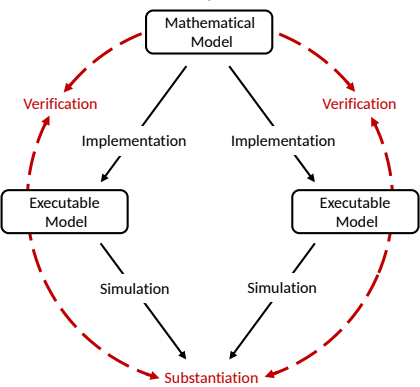

Building a workflow for the analysis of slow wave activity across heterogeneous measurement
Robin Gutzen, Michael Denker,
Guila de Bonis, Elena Pastorelli, Pier Paolucci
Institute of Neuroscience and Medicine (INM-6), Research Center Jülich, Germany
APE lab, Istituto Nazionale di Fisica Nucleare Rome, Italy
26.09.2019 | SP3-based meeting, Liège
Cortical waves
- slow waves 0.5 - 4 Hz
- occurs during anesthesia and sleep
- linked to memory consolidation !?
- observable in various species and with various measurements
The Collaboration of Use Case SGA2-SP3-UC002
aka WaveScalEphant

- Data
Anesthetized mice (ketamin)
Calcium Imaging, ECoG - Model
WaveScalES spiking model
24x24 cortical modules á 1250 neurons
implemented in DPSNN and NEST - Analysis
Pipeline for optical and signals
PYTHON and MatLab scripts
Why reimplement? What is the added value?
- custom code -> general and reusable code
- writing analysis code is hard, reading it is harder
- curating and publishing of workflows
Workflow aspects
- Standard representation of data formats
- Standard algorithms and implementations
- Modular and adaptable analysis steps
- Provenance and explicit parameters settings
- Quantitative characetization/calibration/validation methods
Added value
- Findable on Neuroinformatics platform (Knowledge Graph)
- Accessibility of data, results, and workflow
- Interoperable linking of data, metadata, and results
- Reusablity and generalization of individual analysis elements
- Quantitative evaluation of models, datasets, and simulators
Tools

Reminder: simulator comparison


The workflow